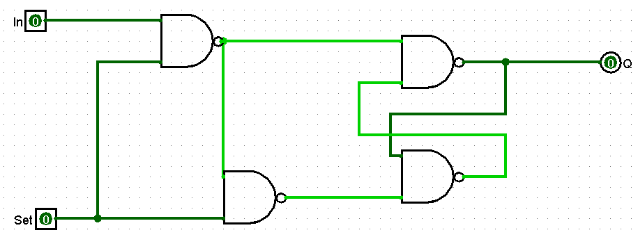

Week 4 Summary & Review
Watch the video below for a summary of this week's key topics, from the concept of feedback loops to the structure of RAM.
View Video Transcript
Part 1: Introduction to Sequential Logic
Welcome! This week, we transition from circuits that just calculate (combinational) to circuits that can **remember** (sequential). The key ingredient is the **feedback loop**, where a circuit's output is fed back into its own input, creating a state.
Combinational vs. Sequential Logic
- Combinational: The output depends *only* on the current inputs. Think of a simple calculator; 2 + 2 will always be 4.
- Sequential: The output depends on the current inputs *and* the circuit's past state. It has memory.
Analogy: Light Switch vs. Toggle Button
A simple light switch is **combinational**. Its state (up/down) directly determines if the light is on or off. A TV power button is **sequential**. You press the same button to turn it on (if it's off) and to turn it off (if it's on). The button's action depends on the TV's current state.
Part 2: Building Memory from Gates - The Latch
The most fundamental memory element is the **latch**. We can build one using just two NAND gates in a feedback loop. This is called an **S'R' Latch** (Set-Reset Latch with active-low inputs).
Interactive S'R' Latch (from NAND Gates)
This latch has two inputs, S' (Set-not) and R' (Reset-not), and two outputs, Q and Q'. Because it's built from NAND gates, the inputs are **active-low**. This means you activate a signal by setting its input to 0, not 1.
- Hold (S'=1, R'=1): This is the inactive, "remembering" state. The latch holds its previous value.
- Set (S'=0, R'=1): The active-low S' input forces the output Q to 1.
- Reset (S'=1, R'=0): The active-low R' input forces the output Q to 0.
- Invalid (S'=0, R'=0): Activating both inputs at once forces both Q and Q' to 1, which breaks the rule that they must be opposites.
S'R' Latch Simulator
Example: Gated S-R Latch in Logisim
In Logisim, when we create our S-R latch, we have 2 inputs that we will call "In" and "Set" where the "In" bit is the value to be stored in this memory bit and the "Set" allows us to change what is stored in this bit. We only care about the Q output which is what is stored so we truncate the wire to Q' since it is not needed.
A Note on Startup Dynamics & Race Conditions
You might notice in a simulator like Logisim that when the simulation starts, the latch outputs flicker between red (error/indeterminate) and random states. This is because a real-world latch has no defined state at power-on. Both gates "race" to determine the output based on tiny physical imperfections. Eventually, one "wins" and the circuit settles into a stable, but random, state (either Q=0 or Q=1). This is why most sequential systems include a global **reset signal** to force all memory elements into a known starting state.
Part 3: Registers and Clocked Systems
A single latch holds one bit. To store a byte (8 bits), we need eight memory elements working together. A **register** is a group of flip-flops (an improved, clock-controlled latch) that store multiple bits in parallel. To ensure all bits are updated at the exact same time, we use a common **clock signal**.
Interactive 4-Bit Register
This register uses D Flip-Flops. Data is only loaded from the input when the **Load/Enable** signal is high (1) and the **Clock** transitions from low to high (a "rising edge"). The **Clear** signal asynchronously resets all bits to 0.
4-Bit Register Simulator
Part 4: Introduction to RAM
How do we go from an 8-bit register to the kilobytes or gigabytes of RAM in a computer? By arranging our memory cells in a grid and using an **address decoder** to select which specific location (or "word") we want to read from or write to.
Simplified RAM Model (8 words x 4 bits)
This model has 8 memory locations (addresses 000 through 111). Each location stores a 4-bit word.
- Memory Address Register (MAR): Holds the address of the location to be accessed.
- Memory Data Register (MDR): Holds the data to be written or the data that was just read.
- Control Signals: A Read/Write signal determines the operation.
Interactive 8x4 RAM
Address (3-bit):
Data (4-bit):
Check Your Understanding
Test your knowledge of this week's key concepts.
References and Further Reading
- Scott, J. C. (2009). But How Do It Know? - The Basic Principles of Computers for Everyone. A valuable, simplified introduction to the core concepts of computer operation.
- Harris, D. M., & Harris, S. L. (2012). Digital Design and Computer Architecture. Morgan Kaufmann. A comprehensive textbook for a deeper dive into digital logic and computer architecture.